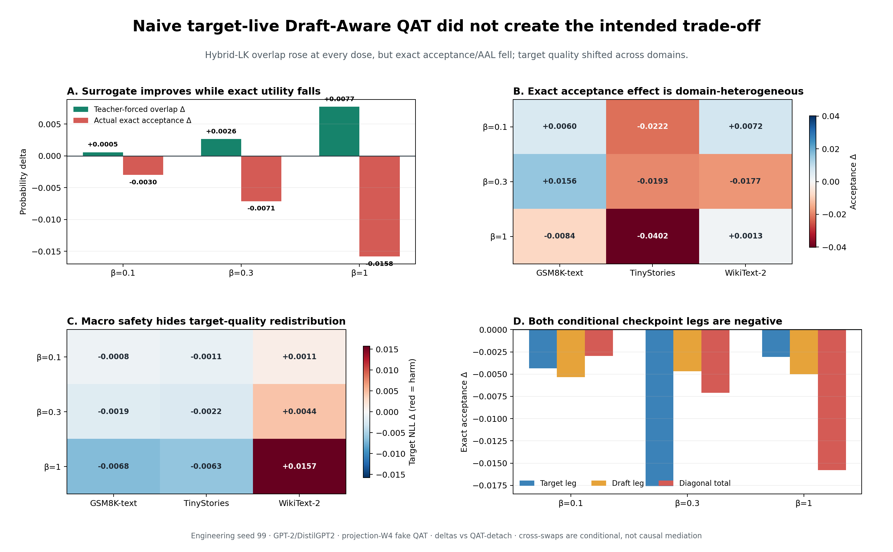
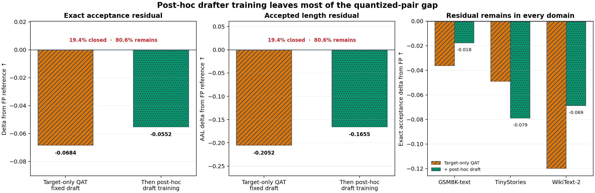

Pinned pretrained target. 원래 speculative pair.
Target-live loss audit · engineering seed 99
Surrogate가 좋아지면
exact도 좋아지는가?
Independent GPT-2 target을 projection-W4 QAT하면서 DistilGPT2-aware Hybrid-LK를 target에도 적용했다. Teacher-forced proxy는 좋아졌지만 actual exact speculative utility는 세 dose 모두 반대로 움직였다.
Independent target / drafterProjection W4 fake QATHybrid LK η=3FP32 eager exact
+0.0077β=1 teacher-forced overlap Δ
−0.0158β=1 actual exact acceptance Δ
−0.0474β=1 actual AAL Δ
+0.0157β=1 WikiText-2 target NLL Δ
Latest matched β-dose result
의도한 trade-off는 없었다.
Naive loss 자체가 exact에 실패했다
QAT-detach와 β 0.1/0.3/1.0은 initialization, 40 minibatches, target/draft exposure, optimizer, schedule, clipping, QAT grid와 draft update를 맞췄다. Detach도 target auxiliary gradient를 계산하되 적용하지 않았다.

| β | Macro NLL Δ | TF overlap Δ | Exact accept Δ | AAL Δ | Prospective gate |
|---|---|---|---|---|---|
| 0.1 | −0.000297 | +0.000543 | −0.002971 | −0.008913 | FAIL |
| 0.3 | +0.000111 | +0.002637 | −0.007115 | −0.021345 | FAIL |
| 1.0 | +0.000904 | +0.007717 | −0.015791 | −0.047372 | FAIL |
Frozen decision.
motivation_not_established_no_exact_gain. Useful dose도 useful-but-unsafe dose도 0/3이다. Exact prompt-cluster interval은 세 dose 모두 0을 포함하며 training seed는 하나다.저장 checkpoint를 바꿔 끼워도 target·draft leg 모두 음수였다
Diagonal을 본 뒤 여섯 off-diagonal을 추가했다. 144/144 cross-swap greedy checks와 96/96 diagonal checks가 target-only output identity를 통과했다.
| β | Conditional target leg | Conditional draft leg | Diagonal total | Non-additive residual |
|---|---|---|---|---|
| 0.1 | −0.004336 | −0.005338 | −0.002971 | +0.006703 |
| 0.3 | −0.017587 | −0.004667 | −0.007115 | +0.015139 |
| 1.0 | −0.003070 | −0.005018 | −0.015791 | −0.007703 |
정확한 해석: raw Hybrid-LK를 target QAT에 더하는 것은 이 pair에서 안전한 exact lever가 아니었다. 그렇다고 proposal-aware QAT 전체가 무의미한 것은 아니다. 아래 v0.2가 보인 quantization compatibility gap은 남아 있고, 이제 필요한 방법이 exact-aligned + target-constrained임이 더 명확해졌다.
Earlier v0.2 quantization-shock panel
왜 proposal-aware QAT를 연구하는가
FP target에 40 step 적응한 drafter checkpoint 하나를 첫 네 condition에 그대로 재사용했다. Target change와 drafter co-adaptation을 먼저 분리한 설계다.
동일 FP-target-aware drafter checkpoint · parameter / optimizer / token exposure 고정
동일 latent weight를 즉시 projection-W4 fake quantize.
CE + frozen FP-teacher KL, 40 steps.
같은 batch/loss/schedule의 target-only W4 QAT.
마지막으로 QAT target을 고정한 채 drafter만 40 step 추가 적응해 post-hoc recovery ceiling을 측정했다. Target-side draft loss는 이 motivation panel에 적용하지 않았다.
Primary result
Quality는 상당히, acceptance는 거의 못 돌아왔다
Target NLL shock recovery
73.2%PTQ 4.1597 → QAT 3.9319 · FP base 3.8485Exact acceptance shock recovery
9.8%PTQ 0.4532 → QAT 0.4606 · FP base 0.5291Post-hoc residual closure
19.4%QAT 0.4606 → draft 재학습 0.4739 · FP base 0.5291
| Condition | Macro NLL ↓ | Teacher KL ↓ | Top-1 ↑ | Acceptance ↑ | AAL ↑ |
|---|---|---|---|---|---|
| FP base | 3.8485 | 0.0000 | 1.0000 | 0.5291 | 2.5872 |
| PTQ W4 | 4.1597 | 0.3021 | 0.6672 | 0.4532 | 2.3597 |
| FP target-FT | 3.7384 | 0.0276 | 0.9043 | 0.5436 | 2.6307 |
| QAT target-FT | 3.9319 | 0.2432 | 0.6911 | 0.4606 | 2.3819 |
| QAT + draft recovery | 3.9319 | 0.2432 | 0.6911 | 0.4739 | 2.4217 |
Paired exact evidence. QAT target의 FP-base acceptance residual은
−0.0684, prompt-cluster descriptive interval은 [−0.1141, −0.0209]였다. Prompt는 training-seed replicate가 아니지만 관찰 window의 잔여 gap은 일관된 방향이었다.Sequential baseline audit
QAT하고 drafter를 따로 학습해도 80.6%가 남았다
Target-only QAT를 끝낸 뒤 target을 완전히 고정하고 동일 drafter만 Hybrid LK로 40 step 더 학습했다. Target NLL·PPL·teacher KL·top-1은 그대로였지만, exact acceptance와 AAL의 FP 잔여 gap은 각각 19.4%만 닫혔다.

| Actual endpoint | FP reference | QAT + fixed draft | Then post-hoc draft | Gain | Residual closed | Still below FP |
|---|---|---|---|---|---|---|
| Exact acceptance ↑ | 0.5291 | 0.4606 | 0.4739 | +0.0133 | 19.4% | −0.0552 |
| AAL ↑ | 2.5872 | 2.3819 | 2.4217 | +0.0398 | 19.4% | −0.1655 |
왜 QAT 중 aware한가? Sequential 방식은 완성된
pQ를 잠근 채 q만 움직인다. 시험할 가설은 target-only QAT와 품질이 동등한 quantized-target feasible set 안에서 proposal compatibility를 함께 tie-break하면 이 sequential 기준선보다 더 큰 exact utility를 얻을 수 있다는 것이다.아직 증명된 것은 아니다. 이 panel에는 protected joint와 sequential의 matched head-to-head arm이 없다. 따라서 19.4%는 joint의 예상 gain이나 sequential 방식의 상한이 아니라, 시험한 40-step post-hoc 기준선의 제한을 나타내는 descriptive 수치다. 더 긴 수렴 학습과 tuned distillation baseline은 다음 비교에 포함해야 한다.
Domain stratification
Shock는 공통, 간단한 recovery는 이질적
PTQ는 세 domain 모두 NLL과 exact acceptance를 악화시켰다. WikiText-2에서는 QAT NLL이 FP보다 좋아졌는데도 acceptance는 거의 복구되지 않았다.

| Corpus | PTQ−FP NLL | QAT−FP NLL | PTQ−FP accept | QAT−FP accept | Draft recovery |
|---|---|---|---|---|---|
| GSM8K-text | +0.2734 | +0.1188 | −0.0361 | −0.0363 | +0.0185 |
| TinyStories | +0.2506 | +0.1592 | −0.0680 | −0.0490 | −0.0299 |
| WikiText-2 | +0.4095 | −0.0280 | −0.1234 | −0.1199 | +0.0511 |
Primary-source landscape · 28 works
Joint 학습은 이미 있다.
QAT 교집합이 비어 있다
“Joint”를 하나로 세지 않고 target update, proposal update, acceptance-aware signal, QAT 여부로 분해했다. 결론은 categorical novelty가 아니라 비교 가능한 좁은 gap이다.
Halfway SD
Hybrid LK를 target LoRA와 EAGLE-3식 head 양쪽에 적용하고 target CE로 보호한다. Acceptance-aware이지만 QAT·독립 AR pair는 아니다.
Frozen target → proposal
DistillSpec, Online SD, TVD++, LK는 target을 잠그고 proposal을 맞춘다.
Quantize Target & Drafter
Target QAD를 먼저 끝낸 뒤 quantized target에 drafter를 적응한다. QAT/QAD와 proposal을 연결하지만 순차 방식이다.
| Work / recipe | Target | Proposal | Accept signal | QAT | 분류와 경계 |
|---|---|---|---|---|---|
| Halfway SD | YES | YES | YES | NO | 가장 가까운 J3 · CE guard · head 기반 저자 원고 |
| Medusa-2 | YES | YES | NO | NO | Backbone + native head shared-path joint |
| Spec. Streaming · LayerSkip · MTP | YES | YES | NO | NO | Shared/self future-token co-training |
| DistillSpec · Online SD · TVD++ | NO | YES | PART | NO | 독립 drafter의 frozen-target alignment |
| EAGLE · EAGLE-3 · ReDrafter | NO | YES | NO | NO | Frozen-target feature proposal |
| LK Losses · DVI | NO | YES | YES | NO | Acceptance/verifier-aware, target 고정 |
| LLM-QAT · EfficientQAT · L4Q · QAD | YES | NO | NO | YES | Target-only quantization anchor |
| QSpec | NO | NO | INFER | NO | Retraining 없는 quantized inference coupling |
| Quantize Target & Drafter | FIRST | YES | NO | YES | Target QAD → frozen target → draft의 순차 recipe |
| Draft-Aware QAT gap | YES | YES | YES | YES | Prospective intersection · 아직 efficacy evidence 아님 |
GAP
Proposal-aware target QAT/QAD가 target-only QAT 대비 target non-inferiority와 tuned sequential 대비 actual exact acceptance/AAL 우위를 동시에 보일 수 있는가?
일반 보호 comparator로는 PCGrad, CAGrad, Nash-MTL, Bloop가 있다. 이들은 직접 speculative 선행이 아니며 target-only Adam trajectory나 QAT code transition을 자동으로 보호하지 않는다.
Prospective decision
무엇이 통과했고, 무엇이 실패했는가
Quantization shock
NLL +0.3112와 exact acceptance −0.0758. 같은 latent target과 같은 drafter.
≥80% quality recovery
Target-only QAT NLL recovery 73.2%. 사전 threshold를 사후 변경하지 않는다.
Spec recovery lag
Quality와 acceptance recovery 차이 63.4 percentage points.
Ordered decision:
motivation_not_established_seed99_single_pair. 이는 quantized-target mismatch가 없다는 뜻이 아니다. “target 품질이 80% 이상 복구된 뒤에도 acceptance만 남는다”는 더 강한 문장의 prerequisite가 실패했다는 뜻이다.Research framing
다음 방법은 exact-aligned이면서 target-constrained여야 한다
v0.3 때문에 “Hybrid-LK를 target에도 미분하면 된다”는 단순 해법은 제외됐다. 다음 primary contrast는 같은 initialization, QAT recipe, bit width, data, target/draft exposure와 update/compute budget의 protected exact-aligned draft-aware − (target-only QAT + tuned post-hoc adapted draft)다. Protected arm은 target NLL/downstream/domain-floor non-inferiority를 먼저 지키고 exact acceptance/AAL에서 우위여야 한다.
Draft-aware는 raw auxiliary gradient를 target Adam에 반드시 더한다는 뜻이 아니다. Verified acceptance mass, rejection-aware replay, short exact rollout, quantization scale/code selection, constrained response, alternating 또는 bilevel step이 proposal-aware해도 된다. v0.3은 teacher-forced overlap 단독 최적화가 actual exact transfer를 보장하지 않음을 보여줬다.
Proposal family는 더 이상 categorical out-of-scope가 아니다. Independent drafter, native multi-token head, feature-prediction head 모두 같은 umbrella hypothesis 아래 다룰 수 있다. 다만 이번 수치는 independent GPT-2/DistilGPT2 pair 하나이므로 family label을 유지하고 별도 stratum으로 재현해야 한다.
Exact endpoint
Temperature 1 · full tokenizer support · K=3 · FP32 eager serial full-prefix per target position.
Temperature 1 · full tokenizer support · K=3 · FP32 eager serial full-prefix per target position.
Not a serving result
Projection-only fixed-grid W4 fake quant. Packed INT4, activation/KV quantization, throughput claim 없음.
Projection-only fixed-grid W4 fake quant. Packed INT4, activation/KV quantization, throughput claim 없음.
Inference unit
Training seed n=1. Prompt-cluster interval은 descriptive이며 selection seeds 6–8은 sealed.
Training seed n=1. Prompt-cluster interval은 descriptive이며 selection seeds 6–8은 sealed.
Not joint efficacy
v0.3 naive joint는 exact gain 0/3으로 실패했다. Protected joint가 tuned sequential을 이긴다는 결과는 아직 없다.
v0.3 naive joint는 exact gain 0/3으로 실패했다. Protected joint가 tuned sequential을 이긴다는 결과는 아직 없다.
Loss reference
LK Losses adaptive Hybrid LK η=3; target-only QAT loss는 CE + frozen FP-teacher forward KL.
LK Losses adaptive Hybrid LK η=3; target-only QAT loss는 CE + frozen FP-teacher forward KL.